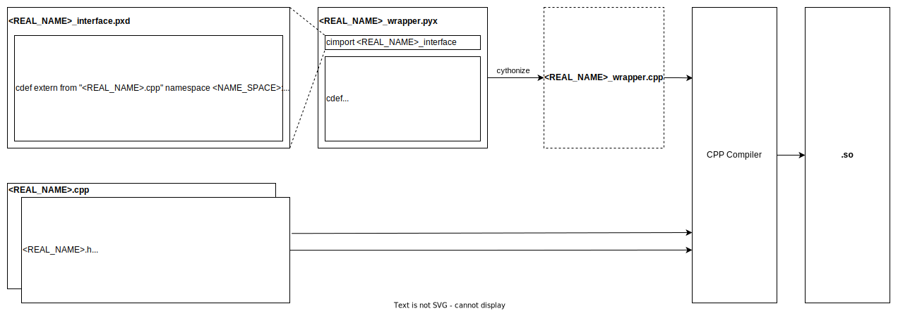

Cython: Wrap a C++ extentsion of Python¶
The index of this document will include
A general archetecture of cython project
Should include as much as possible build information here
A example from example directory
A real world example from rble lib
Warning
A numpy float is a C double!
Why¶
If you are thinking whether you need cython, in most case, you don’t need it. Cython might be a good option if both conditions belwo satisfied.
You care more about running time instead of engineering time.
You have concluded that your engineering logic works in a slower language, optimization is next step.
What¶
Extension is python module you write in other language, in here we refer C/C++
Cython will just use whatever standard C compiler to compile it to .so file
Eventually, python allow you import it
How: The architecture of a python project with cython extension¶
A conoventional architecture and naming rule is shown below:
<PROJECT>
<MODULE>
include
<REAL_NAME>.h
src
<REAL_NAME>.cpp
python
<REAL_NAME>_wrapper.pyx
<REAL_NAME>_interface.pxd
tests
.py
setup.py
Warning
Important! DO NOT name the .pyx file the same as your .cpp file! When the cythonize function is called later, a new .cpp file with the same name as your .pyx file is generated. If you name both your original .cpp and your .pyx file the same, your .cpp file will be overwritten! Which is bad.
Though there is tldr solution if you really need to name them exactly same.
A work flow¶
{kind=link}
Orgnize¶
A Cython module can be split into two parts: a definition file with a .pxd suffix, containing C declarations that are to be available to other Cython modules, and an implementation file with a .pyx/.py suffix, containing everything else. When a module wants to use something declared in another module’s definition file, it imports it using the cimport statement or using special cython.cimports package.
A .pxd file that consists solely of extern declarations does not need to correspond to an actual .pyx/.py file or Python module. This can make it a convenient place to put common declarations, for example declarations of functions from an external library that one wants to use in several modules.
When you cimport a module called modulename, the Cython compiler searches for a file called modulename.pxd. It searches for this file along the path for include files (as specified by -I command line options or the include_path option to cythonize()), as well as sys.path.
Using package_data to install .pxd files in your setup.py script allows other packages to cimport items from your module as a dependency.
Also, whenever you compile a file modulename.pyx/modulename.py, the corresponding definition file modulename.pxd is first searched for along the include path (but not sys.path), and if found, it is processed before processing the .pyx file.
Stay with .h and .cpp¶
The .h files in include and .cpp files in src are just pure/raw c++ files. They should be 100% legal in a pure c++ environment.
.pyx¶
# distutils: language = c++
cimport numpy as np
from compute_interface cimport Rectangle
from compute_interface cimport Vec4d, Vec4f
from compute_interface cimport ccompute_d, ccompute_f
# rectangle is the name of .pxd from rectangle.pxd
# Rectangle is the class name defined by cdef in rectangle.pxd
# Create a Cython extension type which holds a C++ instance
# as an attribute and create a bunch of forwarding methods
# Python extension type.
cdef class PyRectangle:
cdef Rectangle c_rect # Hold a C++ instance which we're wrapping
def __cinit__(self, int x0, int y0, int x1, int y1):
self.c_rect = Rectangle(x0, y0, x1, y1)
def get_area(self):
return self.c_rect.getArea()
def get_size(self):
cdef int width, height
self.c_rect.getSize(&width, &height)
return width, height
def move(self, dx, dy):
self.c_rect.move(dx, dy)
cdef Vec4d NumpyToVector4d(np.ndarray['double', ndim=1, mode="c"] x):
cdef Vec4d cx
for i in range(4):
cx[i] = x[i]
return cx
cdef np.ndarray[double] Vector4dToNumpy (Vec4d cx):
result = np.ndarray ((cx.rows()), dtype='double')
for i in range (cx.rows()):
result[i] = cx[i]
return result
cpdef compute_d(arr):
return Vector4dToNumpy(ccompute_d(NumpyToVector4d(arr)))
cdef Vec4f NumpyToVector4f(np.ndarray['float', ndim=1, mode="c"] x):
cdef Vec4f cx
for i in range(4):
cx[i] = x[i]
return cx
cdef np.ndarray[float] Vector4fToNumpy (Vec4f cx):
result = np.ndarray ((cx.rows()), dtype='float')
for i in range (cx.rows()):
result[i] = cx[i]
return result
cpdef compute_f(arr):
return Vector4fToNumpy(ccompute_f(NumpyToVector4f(arr)))
Here we are basiclly write python code(Cython extension type) as a wrapper to wrap the logic of .cpp file. When I said wrapping C function, I mean we define a python function and inside it, we just call our c function.
In my naive understanding, this file contain rewritten python-ish code that matches your function and class in c++ files.
At the beginning, you need cimport your c class definition(It represent cpp class in a python/cython class way) from pxd module. If you have ‘compute_interface.pxd’, then
In the python class that we are about to write, you need use cdef to define a python-ish class for latter use.
cdef class PyRectangle:
cdef Rectangle c_rect # Hold a C++ instance which we're wrapping
which has a c object as an attribute
declare it by c class which was cimport just above. This declaration usually take place in class attribute location.
In __cinit__ magic method, construct c object as a attribute of python class.
def __cinit__(self, int x0, int y0, int x1, int y1): self.c_rect = Rectangle(x0, y0, x1, y1)
Next, you just need to rewrite all method you need by calling c object methods, like
def get_area(self): return self.c_rect.getArea()
.pxd file¶
It is a definition file, the meanding of “d” in “pxd”. The role of .pxd file is like a shared header file of cython code,
It is a shared inclusing
It give you a chance to select what you wanna declare from C external, not always all
Use c++ file as source. Declare python/cython class with cdef
cdef extern from "Rectangle.h" namespace "shapes":
cdef cppclass Rectangle:
Here the extern is refer that the declaration of variables/function come from external. Next we declare each method and private members
Rectangle() except +
Rectangle(int, int, int, int) except +
int x0, y0, x1, y1
int getArea()
void getSize(int* width, int* height)
void move(int, int)
Note
You may feel that line
cdef extern from "<HEADER>.h"
should be enough to inlcude whatever you need, and the line below like
Rectangle(int, int, int, int) except +
is kinda of redundant, yes!. kinda, here is reason
cython is welcome to more automation but based on my knowledge this has not been impolementd and it’s time expensive.
here, it’s more like checking purpose to check function you will use is matching the thing in you c header file.
you have a chance to only declare function you need , not include all of them.
expcept + here is make sure that python will raise the exception of c++ error.
Install package¶
setup.py¶
make sure code below are in setup.py
from setuptools import setup, Extension
from Cython.Build import cythonize
import numpy
setup(
ext_modules=cythonize(Extension(name="compute_wrapper",
sources=["compute_wrapper.pyx",
"compute.cpp"],
# Either put .cpp sources file here
# OR by using directive in .pyx file,
# # directive: sources = compute.cpp
#
# OR by putting code inside .pxd file
# cdef extern from "compute.cpp":
# pass
#
include_dirs=[numpy.get_include()],
language="c++",
extra_compile_args=["-std=c++11"],
define_macros=[("NPY_NO_DEPRECATED_API",
"NPY_1_7_API_VERSION")]
),
compiler_directives={'language_level': '3str'}
# This is for eliminate warning, though it is not
# very necessary.
# FutureWarning: Cython directive 'language_level'
# not set, using '3str' for now (Py3). This has
# changed from earlier releases!
)
)
Here the meaning of argument
name: A architecture name that seperated by ‘.’(dot), dot is not meaning of file type
sources: A list of source files that not being cdef in .pxd file
A minimal command run is below
$ python setup.py build_ext
However if you need run the so in current file, you need add –inplace flag and if you wanna force to recompile each time, you need –force
$ python setup.py build_ext --inplace --force
Use setup.cfg to make things easy¶
There are tons of flag, so to make it easy, you could write all options and flag in a setup.cfg.
You could config setup.cfg by instruction here https://docs.python.org/3/distutils/configfile.html
For example, configure by setup.cfg in a format like
[command]
option=value
...
the running code above could be configured
[build_ext]
inplace=1
force=1
and you could just run and the flags will add to the end automatically
$ python setup.py build_ext
Use cython with jupyter notebook/ipython¶
in the top of notebook/ipython .. code:
%%load_ext cythonmagic
In the top your code cell or ipython .. code:
%%cython
# write your code
Practice with C and Python community: Eigne and Numpy¶
How to get Eigen library¶
How to get numpy package¶
How to get cpp std libray¶
A code here also work as good examples on how to declare C++ classes.
The code below perfectly show us the logistic to mix Eigen and Numpy with Cython. It trys call a CalcPointAcceleration from python which transfers all variables to cpp and use some cpp source code with Eigen do real math calculation and then transfer variables back to Numpy.
.pyx file is in https://github.com/rbdl/rbdl/blob/master/python/rbdl-wrapper.pyx#L1873
import numpy as np
cimport numpy as np
cimport csvd
...
def CalcPointAcceleration (Model model,
np.ndarray[double, ndim=1, mode="c"] q,
np.ndarray[double, ndim=1, mode="c"] qdot,
np.ndarray[double, ndim=1, mode="c"] qddot,
unsigned int body_id,
np.ndarray[double, ndim=1, mode="c"] body_point_position,
update_kinematics=True):
return Vector3dToNumpy (crbdl.CalcPointAcceleration (
model.thisptr[0],
NumpyToVectorNd (q),
NumpyToVectorNd (qdot),
NumpyToVectorNd (qddot),
body_id,
NumpyToVector3d (body_point_position),
update_kinematics
))
If we look close of return line, from inside to outside:
Call NumpyToEigen-ish function, here it call NumpyToVectorNd
Call Actuall function by crbdl.function name. This function is shown in
crbdl.pxd by cdef and cdef extern from “<HEADER.h>” namespace “<NAMESPACE>”:
.h file
.cpp file
Call EigenToNumpy-ish function, here it call Vector2dToNumpy
Math::Vector3d CalcPointAcceleration (
Model &model,
const Math::VectorNd &Q,
const Math::VectorNd &QDot,
const Math::VectorNd &QDDot,
unsigned int body_id,
const Math::Vector3d &point_position,
bool update_kinematics = true
);
.cpp file https://github.com/rbdl/rbdl/blob/242bf36fbae13ef2b67414e23844f59f97d24ea1/src/Kinematics.cc#L513
Vector3d CalcPointAcceleration (
Model &model,
const VectorNd &Q,
const VectorNd &QDot,
const VectorNd &QDDot,
unsigned int body_id,
const Vector3d &point_position,
bool update_kinematics) {
.pxd file https://github.com/rbdl/rbdl/blob/242bf36fbae13ef2b67414e23844f59f97d24ea1/python/crbdl.pxd#L254
cdef extern from "<rbdl/Kinematics.h>" namespace "RigidBodyDynamics":
cdef Vector3d CalcPointAcceleration (Model& model,
const VectorNd &q,
const VectorNd &qdot,
const VectorNd &qddot,
const unsigned int body_id,
const Vector3d &body_point_coordinates,
bool update_kinematics)
When you use cdef¶
When you need define something that need to be used later in python but its come from cpp(in .h file and .cpp file)
numpy import vs cimport¶
how to import or cimport numpy in .pyx file. https://stackoverflow.com/questions/20268228/cython-cimport-and-import-numpy-as-both-np
Cython: “fatal error: numpy/arrayobject.h: No such file or directory”¶
Directive comments¶
The comments in cython related file are compling directives which do take effect. Ref: https://cython.readthedocs.io/en/latest/src/userguide/source_files_and_compilation.html#how-to-set-directives The directive is prefered to setup in setup.py by this https://cython.readthedocs.io/en/latest/src/userguide/source_files_and_compilation.html#how-to-set-directives
def vs cdef vs cpdef¶
cdef is basiclly define a function that only workable inside package. it cannot be used by python directly. It is local to current file. If you wanna use it by python directly, aka do something like below
from pkg.pyx_module import function_defined_inside_pyx
function_defined_inside_pyx(...)
The function_defined_inside_pyx has to be defined by cpdef. cpdef could be called by local C and externally Python
Q: Why don’t always use cpdef
cpdef has some constrain in taking argument, it cannot take some C argument like pointers, ex float * x other than that, yes, you could always use cpdef.
Thing to remember is always use def and cpdef to expose function to outside
Cannot find Eign/Core¶
How do I wrap a C class with cython¶
https://stackoverflow.com/questions/8933263/how-do-i-wrap-a-c-class-with-cython
CI/CD a Cython Project¶
pytest¶
The pytes isn’t work well with cython, before test, you need install editable by
python -m pip install -e .
If you miss -e, it won’t work.
FAQ¶
Something like warning below
./cppTypes.h:17:16: warning: alias declarations are a C++11 extension [-Wc++11-extensions]
using RotMat = typename Eigen::Matrix<T, 3, 3>;
could be solved by setting up language of Extension
language="c++"
in setup.py
...
setup(
ext_modules=cythonize(Extension("rect",
sources = ["rect.pyx"],
includedirs=[numpy.get_include()],
language="c++"))
)
Something like error below
rect.cpp:973:10: fatal error: 'numpy/arrayobject.h' file not found
#include "numpy/arrayobject.h"
^~~~~~~~~~~~~~~~~~~~~
1 error generated.
could be solved by include_dirs in Extension
include_dirs=[numpy.get_include()],
in setup.py
...
setup(
ext_modules=cythonize(Extension("rect",
sources = ["rect.pyx"],
include_dirs=[numpy.get_include()],
language="c++"))
)
Notice: Please double check the spelling of include_dirs. If you misspell it, there will be only a not highlight warning before fatal error of ‘numpy/arrayobject.h’ file not found and it is very easy to miss. In this case the whole output looks like
<CONDA_ENV_PATH>/lib/python3.10/site-packages/setuptools/_distutils/dist.py:262: UserWarning: Unknown distribution option: 'TYPO_OF_include_dirs'
warnings.warn(msg)
running build_ext
building '<EXTENSION>' extension
clang ...
<EXTENSION>.cpp:973:10: fatal error: 'numpy/arrayobject.h' file not found
#include "numpy/arrayobject.h"
^~~~~~~~~~~~~~~~~~~~~
1 error generated.
error: command '/usr/bin/clang' failed with exit code 1
Use cdef¶
If something both exist in C and python, C take privilege, ex, float is C float
cython file names¶
You don’t have to use .pyx , any .py files are ok for cython
setup.py ext_modules¶
You could compile multiple extensions by
cythonize([“.pyx”, “.pyx”])
cython annotation¶
cython -a .pyx